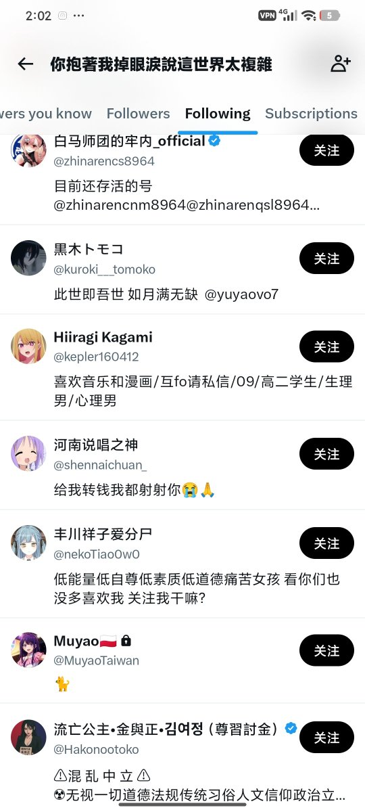

黒木トモコ
@kuroki___tomoko
@0MILiq3gsTl3W1V @X1aoyu_qwq 截图别把我截进去 晦气死了

多伦多小丑
@0MILiq3gsTl3W1V
@X1aoyu_qwq 我不行了，这条蠢猪还看不懂自己的关注列表了，笑抽我了，我要睡觉了，以后要逗猴子就来着吧。截图把它id遮住就认不得了……看清楚了吗，有没有自己名字？是不是following?傻逼慢慢看吧🤣🤗 https://t.co/uPqPNCIB7U